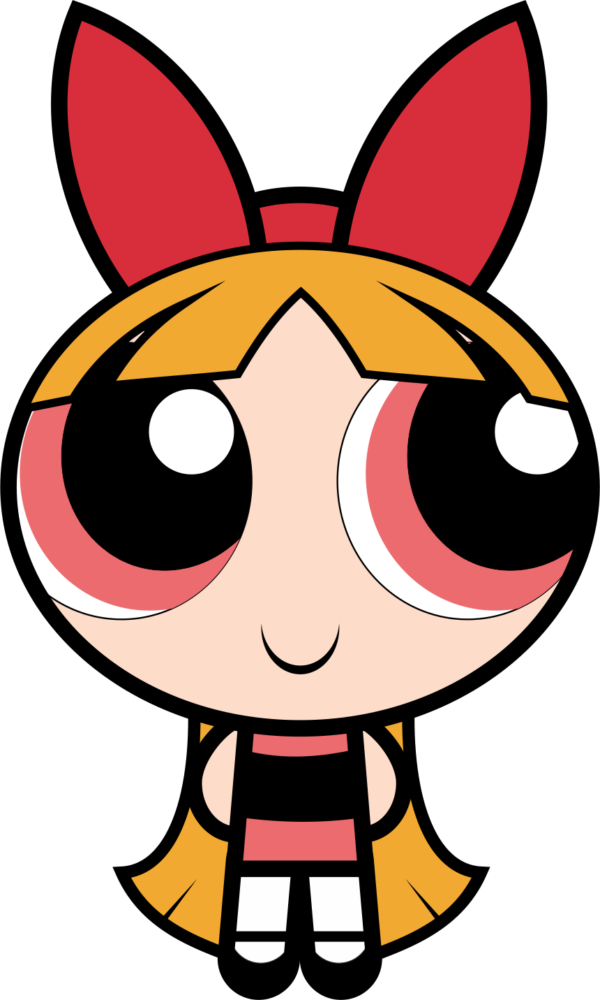

 El motivo por el que Chef fue sacado de la serie es algo complejo de explicar, pues el actor de voz que lo interpretaba aseguró que fue ofendido por uno de los capítulos de South Park
Al principio, Chef era la voz de la razón y la figura de autoridad adulta de los chicos de South Park, pero este personaje murió en la temporada 10 de la serie y no se le volvió a ver ni en el show ni en videojuegos.